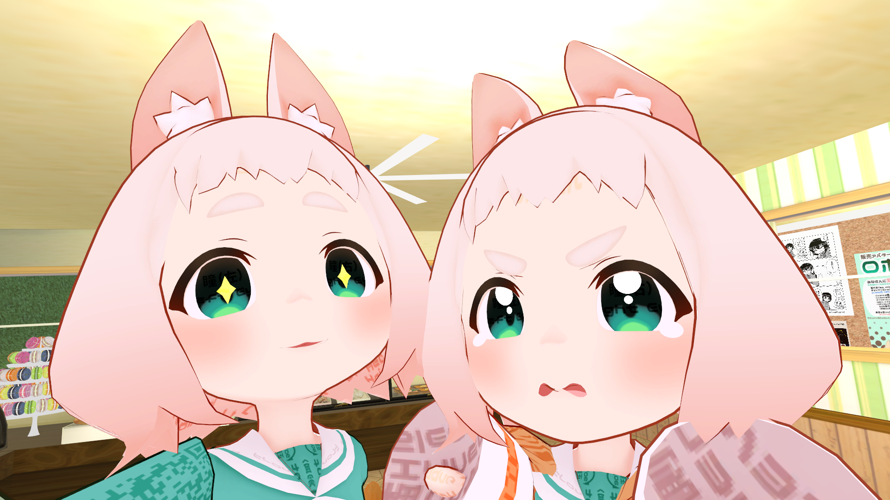

emu-v
June 15, 2021
【こんちゃんお誕生日おめでとう】ぼくが「こんちゃん」と出会いお迎えするまで
今日6月15日はこんちゃんこと「ロポリこん」のお誕生日だそうです 🎉
こんちゃん2歳おめでとうございます 🎂
ロポリこんちゃんが生まれてから今日で2年が経ちました
— 🍏midori🍏 (@KTKG_0021) June 15, 2021
この日を迎えられたのは応援してくれた皆さんのおかげです✨ありがとうございます
親の私は未熟でご迷惑おかけしますが、皆さんと一緒に我が子の成長を見守っていけたら嬉しく思います
今後とも応援よろしくお願いしますhttps://t.co/cntdNOUooG pic.twitter.com/BrSqRt2KhJ
こんちゃんの愛らしい姿は「#ロポリこん」や「#Kon_chan」でTwitter検索できます。
1ヶ月半前のぼくのように、その姿をご存知ない場合はぜひご覧ください♪
こんちゃんとの出会い
ぼくの「こんちゃん」との出会いはVRChatを始めたばかりの頃に遡ります。
VRChatを始めた当初、とても親切な方々に出会ってVRChatの楽しさを体験させていただきました。
「自分でアップロードしてアバター着たいんですよー」ってお話ししたらアバターさんがたくさん見れるワールドに連れて行ってくださって、
「じゃあトラストランク上げないとねー、フレンドリクエスト送るわ」
「我も我も、きっとすぐNew Userになれるよ」
みたいな流れでKnown UserやTrusted Userの方がお友だち申請してくださった。
その初めてのフレンドさんの中にこんちゃんを纏ったはりもくさんがおられました。
薄荷ちゃんのような人型アバターばかりを想像していたぼくは、こんちゃんのその姿に驚き小さな愛らしさに打ちのめされました。
ぼくのこんちゃんに対する第一声は「わ！こんなちっちゃい子いるんですね、可愛い〜〜！」だったと思います。
VRC的日常とこんちゃん
その後順調にVRChatにのめり込み、色々な世界と人々に出会う中、数多くのこんちゃんとも出会いました。
よく参加させていただくイベント「#Questラジオ体操部」や「#Questマッチョ部」には毎回多くのこんちゃんが参加されます。
本当に個性豊かな大勢のこんちゃんとお会いできることは毎回の大きな楽しみの１つです♪
今日は大量投下だよ #Questラジオ体操部 ！
— emu-v🌱えむ (@emu0v) June 14, 2021
こんちゃん集会場！？ってくらい大勢のこんちゃんと低身長勢♪
かわいい！ pic.twitter.com/v15ErvJVts
また、以前参加させていただいたイベントの折には、なんとこんちゃん生みの親であるmidoriさんにお目にかかることができました！
#MENS_VRC あふたーぱーりぃー♪ pic.twitter.com/EWl9C3Gzcw
— emu-v🌱えむ (@emu0v) May 15, 2021
制作中のアバターさん含め次々と着替えてくださるmidoriさんを囲んでのひとときは本当に至高でした 🙏 ✨
尊いってこういう感情を言うんですね 🥺 ✨
つぶらな瞳がかわいい＆キラキラ♪
— emu-v🌱えむ (@emu0v) May 15, 2021
...え、どこからどうみてもつぶらな瞳ですよね？？ pic.twitter.com/D7Wzb1TnYU
このイベントでこんちゃんを着たmidoriさんに初めてお会いした際、お恥ずかしながら生みの親とは存じ上げず「あ、そのアバターさん知ってますよ！こんちゃん可愛いですよね〜」などと話しかけたことは、今思い出しても赤面してしまう黒歴史です…。
きっと超能力で開栓、もしくは脳波コントロール pic.twitter.com/m9jyLYeIYl
— emu-v🌱えむ (@emu0v) May 15, 2021
ところでこんちゃんの話ではないんですけど、midoriさん制作中のルクスくんは顔が良いし肩幅も広いしキュッとしまった身体とゴツすぎない筋肉がほんと良いです。
背中もめっちゃ良いです。
こんちゃんの話ではないんですけど。
別の日にはお友達に誘っていただいて「こんしゃまカフェ」にも連れて行っていただきました。
世界がこんちゃんで埋め尽くされた幸せなワールドで、制作された方のこんちゃんへの愛情が伝わってきます。
この可愛らしいワールドで眠さが限界を迎えるまで遊ばせていただき、たくさんの可愛い写真を撮らせていただいたのは素敵な思い出です ✨

ガマンとお迎え
そんな可愛いこんちゃんとVRChatにログインさえすれば毎日お会いする日々が続きました。
一方のぼくは、VRChatを始めた当初夢みたアバターやワールドの制作に挑戦していました。
その中で難関としてぼくの前に立ちはだかったのが3Dモデリングです。
ここのループカットを入れる場所と「形を整えます」の意味がよく読み取れない pic.twitter.com/oPB9R1lkYb
— emu-v🌱えむ (@emu0v) May 31, 2021
この頃ぼくはBlenderの学習を始めたばかりで、書籍を購入しても書いてある通りにBlenderが動いてくれず、またお友達とVRoidでのアバター制作に挑戦しQuest対応で苦戦したり、環境の問題でハマったりと、VRChatでは充実した時間を過ごしつつも、同時に色々思うようにいかない問題にも直面していました。
そんな中、意志の弱いぼくはこんちゃんをお迎えすることに躊躇してしまいます。
今のタイミングでこんちゃんをお迎えすると、こんちゃんを纏って楽しく過ごすことに終始してしまい、3Dモデリングから自分が逃げてしまうのではないかと思ったのです。
お迎えしたいアバターさんはたくさんあるんですが、もう少しだけ自前でがんばります🙏
— emu-v🌱えむ (@emu0v) June 6, 2021
すでに手元にはお迎えした薄荷ちゃんがおり、そして薄荷ちゃんの作者様はモデルやテクスチャをすごく綺麗に整えて提供してくださっています。
これを理解しないままこんちゃんや他のアバターさんをお迎えすることは、ぼくにとっては思考停止やただの消費になってしまうのではないかと怖くなりました。
そのため「3Dモデリングがもう少しわかるまで新たなアバターさんはお迎えしない」と自分の中で誓いました。
薄荷ちゃんの構造読めたら、ほかのアバターさんをお迎えしてよいという自分ルールです
— emu-v🌱えむ (@emu0v) June 7, 2021
自分自身にそんな縛りを課した上で人型からではなく小物からモデリングを練習していきました。
やる気でたのでがんばりました
— emu-v🌱えむ (@emu0v) June 3, 2021
Blenderさんすごい pic.twitter.com/JKGNhlP6fC
その後どうにかBlenderで人型の人型の素体（服や髪を含まない全身）を作ることができたのは以前記事に書かせていただいた通りです。
この時にいただいたアドバイスと応援の１つ１つに本当に感謝しています 🙏 ✨
VRChatでOculus Quest対応のアバターとワールドを作れるようになりました
#Blender初心者 素体ができたので振り返りメモ
— emu-v🌱えむ (@emu0v) June 6, 2021
一昨日まで知らなかった機能をだいぶ知った
辺ベベル、選択の仕方、頂点結合、etc.
手とか足とか眼球とか作り方すら想像できなかったものが想像つくようにはなった、耳はまだよくわからない
結局3次元座標3点と法線をどう割り制御するかに尽きると理解
ここまで来てようやく、ぼくはぼく自身に対して堂々となんら負い目を感じることなくこんちゃんや他の心に決めていたアバターさんを手元に置くことができます。
満を持してのお迎えです！
I just bought 'ロポリこん' from 'みどりの森゜'. https://t.co/bUBzBOtBq2 #booth_pm
— emu-v🌱えむ (@emu0v) June 11, 2021
こんちゃん本当にかわいいですね
のうがとける
はー
— emu-v🌱えむ (@emu0v) June 12, 2021
こんちゃんってBlenderでみてもかわいい
しあわせ pic.twitter.com/Q197ioR5MC
はー、こんちゃんほんとかわいい
— emu-v🌱えむ (@emu0v) June 11, 2021
あとでぜったいあっぷろーどする
お迎えしたこんちゃんは早速ぼく色に染めさせていただきました ✨
色改変楽しくて無限に時間が溶けます。
かわいいのでは！？ pic.twitter.com/B3kyeIptQ3
— emu-v🌱えむ (@emu0v) June 12, 2021
お会いした方に何度も色や髪に入れたメッシュを褒めていただいて「うちの子可愛いでしょ〜」とすっかり親バカです ✨
再会
そしてなんとこんちゃんお迎え直後にmidoriママにお目にかかる機会がありました！
お迎えできたのでママ呼び（VRCやVTuberの文化）です ✨
おかあさんといっしょ pic.twitter.com/dARGrUJUgS
— emu-v🌱えむ (@emu0v) June 13, 2021
お世話になったはりもくさんにもお迎えしたこんちゃんを着てご挨拶させていただき、一緒に写真を撮らせていただきました✨
Visitor時代にお世話になったはりもくさんとやっとこんちゃん合わせさせていただけたー♪ pic.twitter.com/q1s0RICbXo
— emu-v🌱えむ (@emu0v) June 11, 2021
はりもくさんとは何度も遊ばせていただいているのですが、夢だった「こんちゃん合わせ」をさせていただけて本当にうれしいです！
そんなぼくは目下こんちゃんの表情練習中です！
コンちゃんのびっくり目が好きすぎるんよ
— emu-v🌱えむ (@emu0v) May 14, 2021
こんちゃん2歳、改めておめでとうございます 🎂 sparkles:
ぼくも新米こんちゃんとして今日のお誕生日イベントに伺いますのでどうぞよろしくお願いします 🙏 ✨
こんちゃんはBoothからお迎え（購入）できます ✨